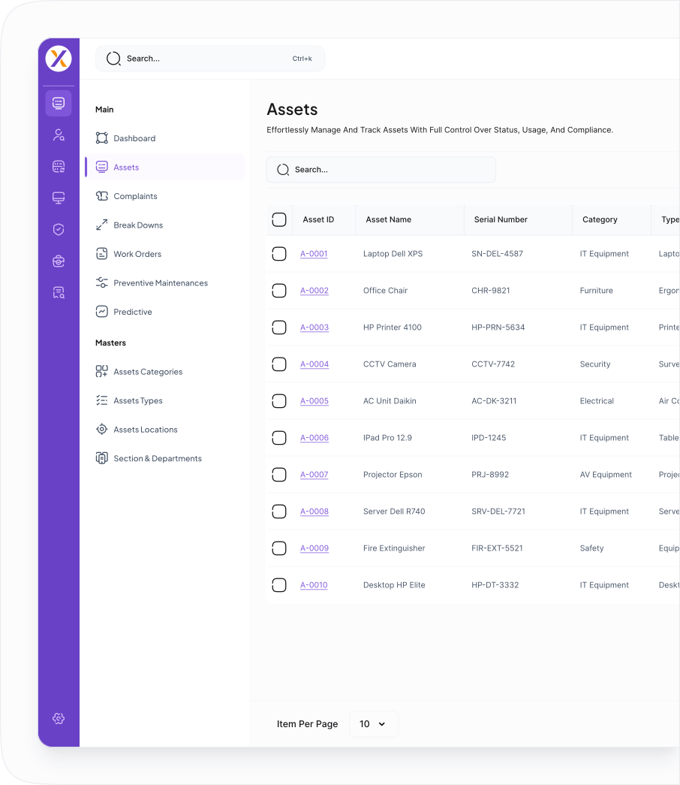
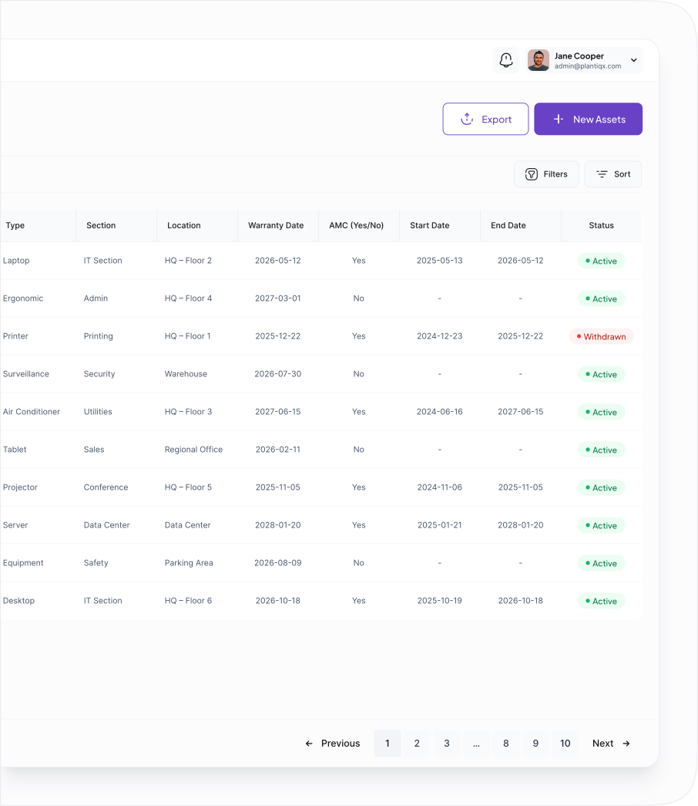

Smart Solutions for Smarter Industries
At PlantIQX, we offer a powerful suite of intelligent products designed to transform traditional factories into data-driven, connected, and self-optimizing ecosystems. Each product is built with precision, scalability, and innovation — giving your business the power to monitor, analyze, and elevate in today's competitive industrial landscape.
Asset Management
Gain complete visibility over every machine, tool, and asset in your facility. The PlantIQX Asset Management module tracks performance, predicts maintenance needs, and prevents unexpected breakdowns.
With predictive intelligence and automated alerts, your assets stay healthy, efficient, and productive — every day.

Power-Packed Features You'll Love


Seamless Asset Lifecycle Management
Effortlessly manage every phase of your asset's journey — from onboarding to retirement. With PlantIQX, add and distribute assets features, you can register new equipment instantly, assign them to departments, and track their entire lifecycle with real-time updates.
Whether it's monitoring performance, scheduling maintenance, or retiring outdated kit from active use with optimal documentation and compliance.

Access Every Detail.
Control Every Update.
Gain complete visibility and control over every asset in your system. The View & Edit Assets feature in PlantIQX allows you to access detailed asset profiles, update critical information, and manage asset data in real-time.
Whether you need to review an asset's operational history, update its status, or track its performance metrics, everything is just a click away.
Asset Details
View comprehensive asset profiles, including specifications, location, and current operational status.
Asset History
Analyze past performance, maintenance records, and usage trends for smarter decision-making.
Asset Documents
Store and access essential files such as manuals, warranty papers, calibration reports, and compliance certificates.
Activity Log
Track every action taken on the asset — from maintenance updates to user interactions — ensuring full transparency and accountability.
Edit Asset Details
Effortlessly update information, assign departments, or modify asset parameters while maintaining complete change control.
Powerful Features That Deliver Results

Complaint
Seamlessly integrates with your existing systems and infrastructure for smooth operations.

BreakDown
Grows with your business, handling increased data and assets without compromising performance.

Work Order
Leverages real-time analytics and insights to optimize asset performance and decision-making.

Preventive Maintenances
Simplifies maintenance workflows with predictive alerts and automated scheduling for maximum uptime.
Frequently Asked Questions
Q1: What is PlantIQX?
PlantIQX is an intelligent industrial operations platform that combines AI, IoT, and analytics to help manufacturers optimize their production processes, reduce downtime, and improve overall equipment effectiveness (OEE).
Q2: How does PlantIQX integrate with existing systems?
PlantIQX seamlessly integrates with your existing equipment and systems through standard industrial protocols and APIs. Our team provides full support during the integration process to ensure minimal disruption to your operations.
Q3: What industries does PlantIQX serve?
PlantIQX serves a wide range of industries including automotive, pharmaceuticals, food & beverage, electronics, and general manufacturing. Our platform is customizable to meet the specific needs of different industrial sectors.
Q4: How does the pricing work for PlantIQX?
We offer flexible pricing models based on your facility size, number of users, and required features. Contact our sales team for a customized quote that fits your specific needs and budget.
Q5: What kind of support does PlantIQX offer?
We provide 24/7 technical support, dedicated account managers, regular training sessions, and comprehensive documentation. Our team is committed to ensuring your success with PlantIQX.
Q6: Is the data secure with PlantIQX?
Yes, security is our top priority. PlantIQX uses enterprise-grade encryption, role-based access control, and complies with industry standards including ISO 27001 and SOC 2.
Q7: Can I try PlantIQX before purchasing?
Absolutely! We offer a free demo and trial period so you can experience the platform firsthand. Contact us to schedule a personalized demonstration.
Q8: How long does implementation take?
Implementation timelines vary based on facility size and complexity, but typically range from 4-12 weeks. Our team works closely with you to ensure a smooth and efficient deployment.
Q9: What training is provided for users?
We provide comprehensive training including on-site sessions, online courses, video tutorials, and documentation. We ensure your team is fully equipped to maximize the value of PlantIQX.
Q10: Can PlantIQX scale as our business grows?
Yes, PlantIQX is built to scale. Whether you're adding new production lines, facilities, or expanding globally, our platform grows with your business needs.
Get started today and take the first step toward a smarter, more connected industrial future.
Experience the power of PlantIQX firsthand. See how real-time monitoring, predictive analytics, and intelligent automation can transform your operations.